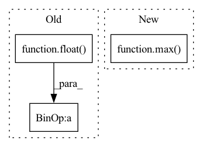

Pattern ID :4367
Before Change
self.batch_size = min(self.n_data, self.batch_size)
log.info("Auto-set batch_size to {}".format(self.batch_size))
if self.epochs is None:
self.epochs = int((2000.0 / float( n_data) ) * (2 ** (2 * log_data)))
self.epochs = min(max_epoch, max(min_epoch, self.epochs))
log.info("Auto-set epochs to {}".format(self.epochs))
// also set lambda_delay:After Change
self.batch_size = min(self.n_data, self.batch_size)
log.info("Auto-set batch_size to {}".format(self.batch_size))
if self.epochs is None:
self.epochs = int(max_epoch / (1 + np.log(max( 1.0, n_data / 100.0) )))
self.epochs = min(max_epoch, max(min_epoch, self.epochs))
log.info("Auto-set epochs to {}".format(self.epochs))
In pattern: SUPERPATTERN
Frequency: 3
Non-data size: 3
Instances Fragment ID: 16083057
Project Name: ourownstory/neural_prophet
Commit Name: 96bfcdeba720af697eb4ca0bb3ddfd9d9b177148
Time: 2021-02-17
Author: ourownstory@users.noreply.github.com
File Name: neuralprophet/configure.py
M Class Name: Train
N Class Name: Train
M Method Name: set_auto_batch_epoch(6)
N Method Name: set_auto_batch_epoch(6)
M Parent Class:
N Parent Class:
M File Name: neuralprophet/configure.py
N File Name: neuralprophet/configure.py
M Start Line: 147
M End Line: 158
N Start Line: 144
N End Line: 151
Before Change
)
else self._f_best[k_metric]
* (
1
+ 0.01
* float(
self.lexico_objectives["tolerances"][
k_metric
].replace("%", "")
)
),
k_target,
]
)After Change
)
if (result[k_metric] < max([tolerance_bound, k_target])) and (
self.best_obj[k_metric]
< max(
[
tolerance_bound,
k_target,
]
)
):
continue
elif result[k_metric] < self.best_obj[k_metric]:
return True Fragment ID: 16083056
Project Name: microsoft/flaml
Commit Name: 3a68da87742c040bbd1321bf435c57d4ccd3be43
Time: 2023-01-17
Author: shaokunzhang529@gmail.com
File Name: flaml/tune/searcher/flow2.py
M Class Name: FLOW2
N Class Name: FLOW2
M Method Name: lexico_compare(2)
N Method Name: lexico_compare(2)
M Parent Class: Searcher
N Parent Class: Searcher
M File Name: flaml/tune/searcher/flow2.py
N File Name: flaml/tune/searcher/flow2.py
M Start Line: 412
M End Line: 464
N Start Line: 417
N End Line: 450
Before Change
if current_step < self.num_warmup_steps:
return float(current_step) / float(max(1, self.num_warmup_steps))
return max(
0.0, float( self.num_training_steps - current_step) / float(max(1, self.num_training_steps - self.num_warmup_steps))
)
def get_lr(self):After Change
if relative_curr_step < self.num_warmup_steps:
return float(relative_curr_step) / float(max(1, self.num_warmup_steps))
return max(
0.0, float(relative_num_training_steps - relative_curr_step) / float(max(1, relative_num_training_steps - self.num_warmup_steps))
)
def get_lr(self):
if not self._get_lr_called_within_step:
warnings.warn("To get the last learning rate computed by the scheduler, " Fragment ID: 16083074
Project Name: ikernels/transformers-lightning
Commit Name: 090b707330b9253aa4c9f71cf1830a7ed910977f
Time: 2020-12-23
Author: matteogabburo@gmail.com
File Name: transformers_lightning/schedulers/linear_scheduler_with_warmup.py
M Class Name: LinearSchedulerWithWarmup
N Class Name: LinearSchedulerWithWarmup
M Method Name: lr_lambda(2)
N Method Name: lr_lambda(2)
M Parent Class: _LRScheduler
N Parent Class: _LRScheduler
M File Name: transformers_lightning/schedulers/linear_scheduler_with_warmup.py
N File Name: transformers_lightning/schedulers/linear_scheduler_with_warmup.py
M Start Line: 47
M End Line: 51
N Start Line: 50
N End Line: 60